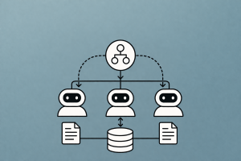

graph TD
subgraph Supervisor["Supervisor"]
S1["Supervisor"] --> S2["Agent A"]
S1 --> S3["Agent B"]
S1 --> S4["Agent C"]
S2 --> S1
S3 --> S1
S4 --> S1
end
subgraph Swarm["Swarm (Handoffs)"]
W1["Agent A"] --> W2["Agent B"]
W2 --> W3["Agent C"]
W3 --> W1
W2 --> W1
end
subgraph Hierarchical["Hierarchical"]
H1["Top Supervisor"] --> H2["Team Lead 1"]
H1 --> H3["Team Lead 2"]
H2 --> H4["Worker A"]
H2 --> H5["Worker B"]
H3 --> H6["Worker C"]
H3 --> H7["Worker D"]
end
style S1 fill:#9b59b6,color:#fff,stroke:#333
style S2 fill:#4a90d9,color:#fff,stroke:#333
style S3 fill:#4a90d9,color:#fff,stroke:#333
style S4 fill:#4a90d9,color:#fff,stroke:#333
style W1 fill:#27ae60,color:#fff,stroke:#333
style W2 fill:#27ae60,color:#fff,stroke:#333
style W3 fill:#27ae60,color:#fff,stroke:#333
style H1 fill:#e74c3c,color:#fff,stroke:#333
style H2 fill:#e67e22,color:#fff,stroke:#333
style H3 fill:#e67e22,color:#fff,stroke:#333
style H4 fill:#4a90d9,color:#fff,stroke:#333
style H5 fill:#4a90d9,color:#fff,stroke:#333
style H6 fill:#4a90d9,color:#fff,stroke:#333
style H7 fill:#4a90d9,color:#fff,stroke:#333
style Supervisor fill:#F2F2F2,stroke:#D9D9D9
style Swarm fill:#F2F2F2,stroke:#D9D9D9
style Hierarchical fill:#F2F2F2,stroke:#D9D9D9
Multi-Agent RAG Orchestration Patterns
Supervisor, swarm, and hierarchical topologies for coordinating specialized retrieval agents
Keywords: multi-agent, orchestration, supervisor pattern, swarm, hierarchical agents, agent topology, LangGraph, CrewAI, OpenAI Agents SDK, retrieval agents, RAG, agent coordination, handoffs, subgraphs, task delegation, agent routing, specialized agents, multi-agent RAG

Introduction
A single agent with a dozen tools sounds powerful — until it needs to search a vector store, query a SQL database, validate citations against source documents, and format a research report, all in one turn. Tool selection becomes noisy, prompts inflate, and the agent loses focus. The proven solution: split the work across multiple specialized agents, each with its own tools, prompts, and LLM — and orchestrate them through an explicit topology.
Multi-agent systems aren’t new (JADE, FIPA, and MAS research date to the 1990s), but the LLM era has made them practical. When each agent is an LLM with focused instructions and a small tool set, it performs dramatically better than a generalist agent juggling everything. LangChain’s research confirms this: grouping tools and responsibilities into specialized agents improves both accuracy and debuggability.
The key questions for any multi-agent system are:
- What are the agents? — Each agent has its own prompt, LLM, and tool set
- How are they connected? — The topology defines control flow, communication, and delegation
This article covers the three dominant topologies — supervisor, swarm, and hierarchical — and implements each for retrieval workflows using LangGraph. We compare them against CrewAI and the OpenAI Agents SDK, and provide concrete patterns for multi-source RAG orchestration.
Why Multi-Agent?
The Single-Agent Bottleneck
A single agent with N tools faces compounding problems as N grows:
| Problem | Single Agent | Multi-Agent |
|---|---|---|
| Tool selection noise | Model must choose from N tools — accuracy drops as N increases | Each agent has 2–4 focused tools — selection is near-perfect |
| Prompt bloat | One system prompt must cover all domains | Each agent gets a domain-specific prompt |
| Error isolation | One failure can derail the entire chain | Failures are scoped to one agent — others continue |
| Debugging | Opaque — hard to tell which capability failed | Each agent’s trace is independently inspectable |
| Development | Monolithic — changes affect everything | Modular — teams develop and test agents independently |
| LLM optimization | One model size fits all | Use GPT-4o for reasoning, GPT-4o-mini for simple retrieval |
When to Go Multi-Agent
Multi-agent adds orchestration complexity. Use it when:
- You have 5+ tools spanning different domains (retrieval, calculation, code execution)
- Different tasks need different prompts or LLMs (e.g., a fact-checker vs. a writer)
- You need parallel execution — multiple searches running simultaneously
- You want team-based development — different engineers own different agents
- You need human-in-the-loop for specific capabilities (e.g., approve database writes but not reads)
For simple 2–3 tool agents, a single create_react_agent is sufficient. Don’t over-engineer.
The Three Topologies
Overview
| Topology | Control Flow | Communication | Best For |
|---|---|---|---|
| Supervisor | Central coordinator routes to workers | Workers report back to supervisor only | Structured workflows with clear delegation |
| Swarm | Peer-to-peer handoffs via function returns | Any agent can hand off to any other agent | Dynamic routing, customer service triage |
| Hierarchical | Tree of supervisors, each managing sub-teams | Supervisors aggregate sub-team results | Large-scale systems with domain-separated teams |
Supervisor Pattern
How It Works
A supervisor agent acts as a central coordinator. It receives the user query, decides which worker agent should handle it (or which should go next), dispatches the task, receives the result, and decides the next step — until it has enough information to produce a final answer.
graph TD
A["User Query"] --> B["Supervisor"]
B --> C{"Route to?"}
C -->|retrieval| D["Retrieval Agent"]
C -->|analysis| E["Analysis Agent"]
C -->|writing| F["Writing Agent"]
D --> G["Result → Supervisor"]
E --> G
F --> G
G --> H{"Done?"}
H -->|No| C
H -->|Yes| I["Final Answer"]
style A fill:#4a90d9,color:#fff,stroke:#333
style B fill:#9b59b6,color:#fff,stroke:#333
style C fill:#f5a623,color:#fff,stroke:#333
style D fill:#27ae60,color:#fff,stroke:#333
style E fill:#e67e22,color:#fff,stroke:#333
style F fill:#3498db,color:#fff,stroke:#333
style I fill:#1abc9c,color:#fff,stroke:#333
The supervisor is itself an LLM — it reasons about which agent to call and what to pass. Workers have independent scratchpads (their own message histories), and only their final output is passed back to the supervisor’s global state. This prevents information overload: the supervisor sees summaries, not every intermediate tool call.
Implementation with LangGraph
from typing import TypedDict, Annotated, Literal
from langgraph.graph import StateGraph, END, START
from langgraph.graph.message import add_messages
from langgraph.prebuilt import create_react_agent
from langchain_openai import ChatOpenAI
from langchain_core.tools import tool
from langchain_core.messages import HumanMessage
# --- Define specialized worker agents ---
llm = ChatOpenAI(model="gpt-4o-mini", temperature=0)
@tool
def search_vector_store(query: str) -> str:
"""Search the documentation vector store for relevant passages."""
# In production, this calls your actual vector store
return f"Retrieved documents for: {query}\n- Doc 1: LangGraph uses state machines...\n- Doc 2: Checkpointers save state..."
@tool
def search_web(query: str) -> str:
"""Search the web for recent information not in the knowledge base."""
return f"Web results for: {query}\n- Result 1: Latest LangGraph release notes...\n- Result 2: Community benchmarks..."
@tool
def query_database(sql_description: str) -> str:
"""Query the analytics database. Describe what data you need in natural language."""
return f"Database results for: {sql_description}\n- 1,234 active users, 89% retention rate"
@tool
def calculator(expression: str) -> str:
"""Evaluate a mathematical expression."""
import math
try:
result = eval(expression, {"__builtins__": {}}, {"sqrt": math.sqrt, "abs": abs})
return str(result)
except Exception as e:
return f"Error: {e}"
# Create worker agents with focused tool sets
retrieval_agent = create_react_agent(
model=llm,
tools=[search_vector_store, search_web],
prompt="You are a retrieval specialist. Search for information and return "
"comprehensive, factual results. Always cite which source you used.",
)
analysis_agent = create_react_agent(
model=llm,
tools=[query_database, calculator],
prompt="You are a data analyst. Query databases and perform calculations. "
"Return precise numbers and clear interpretations.",
)
writing_agent = create_react_agent(
model=llm,
tools=[],
prompt="You are a technical writer. Synthesize information from other agents "
"into clear, well-structured responses. Cite sources when available.",
)
WORKERS = {
"retrieval": retrieval_agent,
"analysis": analysis_agent,
"writing": writing_agent,
}
# --- Define the supervisor ---
class SupervisorState(TypedDict):
messages: Annotated[list, add_messages]
next_agent: str
agent_outputs: dict # Stores each agent's final output
def supervisor_node(state: SupervisorState) -> dict:
"""The supervisor decides which agent to call next."""
agent_outputs = state.get("agent_outputs", {})
context = "\n".join(f"[{k}]: {v}" for k, v in agent_outputs.items()) if agent_outputs else "No agent outputs yet."
routing_prompt = f"""You are a supervisor coordinating specialized agents.
Available agents:
- retrieval: Searches documents and web for information
- analysis: Queries databases and performs calculations
- writing: Synthesizes information into polished responses
Agent outputs so far:
{context}
Based on the user's question and any results collected so far, decide which agent to call next.
If you have enough information to answer, respond with "FINISH".
Reply with exactly one word: retrieval, analysis, writing, or FINISH."""
response = llm.invoke([
{"role": "system", "content": routing_prompt},
*state["messages"],
])
next_agent = response.content.strip().lower()
if next_agent not in WORKERS:
next_agent = "FINISH"
return {"next_agent": next_agent}
def worker_node(agent_name: str):
"""Create a worker node that runs a specific agent."""
def node(state: SupervisorState) -> dict:
# Extract the user's original question
user_msg = next(
(m.content for m in state["messages"] if isinstance(m, HumanMessage)),
"",
)
# Add context from other agents
context = state.get("agent_outputs", {})
context_str = "\n".join(f"[{k}]: {v}" for k, v in context.items())
full_query = f"{user_msg}\n\nContext from other agents:\n{context_str}" if context_str else user_msg
# Run the worker agent
result = WORKERS[agent_name].invoke({
"messages": [{"role": "user", "content": full_query}]
})
# Extract the final response
final_msg = result["messages"][-1].content
# Store the output
updated_outputs = {**state.get("agent_outputs", {}), agent_name: final_msg}
return {"agent_outputs": updated_outputs}
return node
def route_after_supervisor(state: SupervisorState) -> str:
"""Route to the chosen worker or end."""
next_agent = state.get("next_agent", "FINISH")
if next_agent == "FINISH":
return "synthesize"
return next_agent
def synthesize_node(state: SupervisorState) -> dict:
"""Produce the final answer from all agent outputs."""
outputs = state.get("agent_outputs", {})
context = "\n\n".join(f"**{k}**:\n{v}" for k, v in outputs.items())
response = llm.invoke([
{"role": "system", "content": "Synthesize the following agent outputs into a clear, comprehensive answer."},
{"role": "user", "content": f"Original question: {state['messages'][0].content}\n\nAgent outputs:\n{context}"},
])
return {"messages": [{"role": "assistant", "content": response.content}]}
# --- Build the graph ---
graph = StateGraph(SupervisorState)
graph.add_node("supervisor", supervisor_node)
graph.add_node("retrieval", worker_node("retrieval"))
graph.add_node("analysis", worker_node("analysis"))
graph.add_node("writing", worker_node("writing"))
graph.add_node("synthesize", synthesize_node)
graph.add_edge(START, "supervisor")
graph.add_conditional_edges("supervisor", route_after_supervisor, {
"retrieval": "retrieval",
"analysis": "analysis",
"writing": "writing",
"synthesize": "synthesize",
})
# After each worker, loop back to supervisor
graph.add_edge("retrieval", "supervisor")
graph.add_edge("analysis", "supervisor")
graph.add_edge("writing", "supervisor")
graph.add_edge("synthesize", END)
supervisor_app = graph.compile()Running It
result = supervisor_app.invoke({
"messages": [{"role": "user", "content": "How many active users do we have?"
" Compare that to what our documentation says about expected growth."}],
"next_agent": "",
"agent_outputs": {},
})
print(result["messages"][-1].content)The supervisor will:
- Route to analysis → query the database for active users
- Route to retrieval → search docs for expected growth metrics
- Route to FINISH → synthesize both results into a final answer
When to Use Supervisor
- Structured multi-step workflows where you know the general task decomposition
- Multi-source retrieval where different data sources need different tools
- Quality control — the supervisor can verify worker outputs before proceeding
- Audit trails — every routing decision is logged in the graph state
Swarm Pattern (Peer-to-Peer Handoffs)
How It Works
In a swarm, there is no central coordinator. Each agent can hand off execution to any other agent by returning a reference to it. The conversation starts with one agent, and control flows dynamically based on each agent’s assessment of what should happen next.
This pattern was popularized by OpenAI’s Swarm (now evolved into the OpenAI Agents SDK). The core primitives are:
- Agent — a set of instructions + tools
- Handoff — a function that returns another agent, transferring control
graph LR
A["Triage Agent"] -->|"complex retrieval"| B["Retrieval Agent"]
A -->|"simple question"| C["Chat Agent"]
B -->|"needs analysis"| D["Analysis Agent"]
B -->|"done"| A
D -->|"done"| A
C -->|"needs data"| B
style A fill:#9b59b6,color:#fff,stroke:#333
style B fill:#27ae60,color:#fff,stroke:#333
style C fill:#4a90d9,color:#fff,stroke:#333
style D fill:#e67e22,color:#fff,stroke:#333
Implementation with LangGraph
LangGraph implements swarm-style handoffs using the Command primitive — a node can return a Command that specifies which node to go to next and what state updates to make:
from typing import TypedDict, Annotated, Literal
from langgraph.graph import StateGraph, END, START
from langgraph.graph.message import add_messages
from langgraph.types import Command
from langchain_openai import ChatOpenAI
from langchain_core.tools import tool
from langchain_core.messages import AIMessage
llm = ChatOpenAI(model="gpt-4o-mini", temperature=0)
class SwarmState(TypedDict):
messages: Annotated[list, add_messages]
current_agent: str
# --- Triage agent: classifies and routes ---
def triage_node(state: SwarmState) -> Command:
"""Classify the query and hand off to the right agent."""
response = llm.invoke([
{"role": "system", "content": (
"You are a triage agent. Classify the user's request and respond with "
"exactly one word:\n"
"- 'retrieval' if the user needs information lookup\n"
"- 'analysis' if the user needs data analysis or calculations\n"
"- 'chat' if this is a simple conversational question"
)},
*state["messages"],
])
target = response.content.strip().lower()
if target not in ("retrieval", "analysis", "chat"):
target = "chat"
return Command(
goto=target,
update={"current_agent": target},
)
# --- Retrieval agent ---
@tool
def search_docs(query: str) -> str:
"""Search the knowledge base for relevant documents."""
return f"Found 3 documents about: {query}"
def retrieval_node(state: SwarmState) -> Command:
"""Handle retrieval tasks. Can hand off to analysis if numbers are needed."""
retrieval_llm = llm.bind_tools([search_docs])
response = retrieval_llm.invoke([
{"role": "system", "content": (
"You are a retrieval specialist. Search for information and answer the question. "
"If the answer requires numerical analysis, say HANDOFF_ANALYSIS in your response."
)},
*state["messages"],
])
# Check if handoff is needed
if isinstance(response, AIMessage) and "HANDOFF_ANALYSIS" in (response.content or ""):
return Command(
goto="analysis",
update={"messages": [response], "current_agent": "analysis"},
)
# Done — return to end
return Command(
goto=END,
update={"messages": [response]},
)
# --- Analysis agent ---
@tool
def calculate(expression: str) -> str:
"""Evaluate a math expression."""
import math
try:
return str(eval(expression, {"__builtins__": {}}, {"sqrt": math.sqrt, "abs": abs}))
except Exception as e:
return f"Error: {e}"
def analysis_node(state: SwarmState) -> Command:
"""Handle analysis tasks. Hands back to triage when done."""
analysis_llm = llm.bind_tools([calculate])
response = analysis_llm.invoke([
{"role": "system", "content": "You are a data analyst. Perform calculations and provide interpretations."},
*state["messages"],
])
return Command(
goto=END,
update={"messages": [response]},
)
# --- Chat agent ---
def chat_node(state: SwarmState) -> Command:
"""Handle simple conversational queries."""
response = llm.invoke([
{"role": "system", "content": "You are a helpful assistant. Answer conversational questions directly."},
*state["messages"],
])
return Command(
goto=END,
update={"messages": [response]},
)
# --- Build the swarm graph ---
swarm_graph = StateGraph(SwarmState)
swarm_graph.add_node("triage", triage_node)
swarm_graph.add_node("retrieval", retrieval_node)
swarm_graph.add_node("analysis", analysis_node)
swarm_graph.add_node("chat", chat_node)
swarm_graph.add_edge(START, "triage")
# No static edges from workers — routing is handled by Command returns
swarm_app = swarm_graph.compile()Running It
result = swarm_app.invoke({
"messages": [{"role": "user", "content": "What is our API rate limit?"}],
"current_agent": "triage",
})
print(result["messages"][-1].content)Control flows: triage → classifies as retrieval → retrieval → searches docs → returns answer.
OpenAI Swarm / Agents SDK Pattern
The same pattern in OpenAI’s Swarm (now the Agents SDK) uses function returns for handoffs:
from swarm import Swarm, Agent
client = Swarm()
def transfer_to_retrieval():
"""Hand off to the retrieval agent for information lookup."""
return retrieval_agent
def transfer_to_analysis():
"""Hand off to the analysis agent for data analysis."""
return analysis_agent
triage_agent = Agent(
name="Triage",
instructions="You are a triage agent. Route the user to the right specialist. "
"Use transfer_to_retrieval for information questions, "
"transfer_to_analysis for data/math questions.",
functions=[transfer_to_retrieval, transfer_to_analysis],
)
retrieval_agent = Agent(
name="Retrieval Specialist",
instructions="You search for and return relevant information.",
functions=[search_docs, transfer_to_analysis], # Can hand off to analysis
)
analysis_agent = Agent(
name="Analysis Specialist",
instructions="You perform data analysis and calculations.",
functions=[calculate],
)
response = client.run(
agent=triage_agent,
messages=[{"role": "user", "content": "How many API calls per minute are allowed?"}],
)
print(response.messages[-1]["content"])The Swarm pattern is stateless between calls (like chat.completions.create), making it lightweight but requiring external state management for multi-turn conversations.
When to Use Swarm
- Customer service triage — classify and route to specialized handlers
- Dynamic routing where the next agent depends on the content of the current agent’s response
- Flat organization — no hierarchy needed, agents are peers
- Lightweight orchestration — minimal boilerplate, agents self-organize
Hierarchical Pattern
How It Works
A hierarchical topology extends the supervisor pattern with multiple levels. A top-level supervisor delegates to team leads, each of which manages their own sub-team of worker agents. Team leads can themselves be LangGraph subgraphs with internal cycles and tool calling.
graph TD
A["Top Supervisor"] --> B["Research Team Lead"]
A --> C["Analysis Team Lead"]
B --> D["Vector Search Agent"]
B --> E["Web Search Agent"]
B --> F["Citation Checker"]
C --> G["Database Agent"]
C --> H["Calculator Agent"]
D --> B
E --> B
F --> B
G --> C
H --> C
B --> A
C --> A
style A fill:#e74c3c,color:#fff,stroke:#333
style B fill:#e67e22,color:#fff,stroke:#333
style C fill:#e67e22,color:#fff,stroke:#333
style D fill:#4a90d9,color:#fff,stroke:#333
style E fill:#4a90d9,color:#fff,stroke:#333
style F fill:#4a90d9,color:#fff,stroke:#333
style G fill:#4a90d9,color:#fff,stroke:#333
style H fill:#4a90d9,color:#fff,stroke:#333
This maps naturally to LangGraph subgraphs — each team is a compiled graph that can be used as a node in the parent.
Implementation with LangGraph Subgraphs
from typing import TypedDict, Annotated
from langgraph.graph import StateGraph, END, START
from langgraph.graph.message import add_messages
from langgraph.prebuilt import create_react_agent
from langchain_openai import ChatOpenAI
from langchain_core.tools import tool
llm = ChatOpenAI(model="gpt-4o-mini", temperature=0)
# --- Research Team ---
@tool
def search_vector_store(query: str) -> str:
"""Search the internal documentation vector store."""
return f"Vector store results for '{query}': Found 3 relevant documents about architecture patterns."
@tool
def search_web(query: str) -> str:
"""Search the web for recent information."""
return f"Web results for '{query}': Recent blog posts and release notes found."
@tool
def check_citations(text: str) -> str:
"""Verify that claims in the text are supported by retrieved sources."""
return "Citation check: 3/3 claims are supported by sources."
research_agent = create_react_agent(
model=llm,
tools=[search_vector_store, search_web, check_citations],
prompt="You are a research team. Search internal docs and the web, "
"verify citations, and return comprehensive findings.",
)
# --- Analysis Team ---
@tool
def query_metrics_db(description: str) -> str:
"""Query the metrics database. Describe what data you need."""
return f"Metrics for '{description}': 1,234 active users, 45% MoM growth, 92% satisfaction."
@tool
def calculator(expression: str) -> str:
"""Evaluate a mathematical expression."""
import math
try:
return str(eval(expression, {"__builtins__": {}}, {"sqrt": math.sqrt, "abs": abs}))
except Exception as e:
return f"Error: {e}"
analysis_agent = create_react_agent(
model=llm,
tools=[query_metrics_db, calculator],
prompt="You are an analysis team. Query databases, perform calculations, "
"and return data-driven insights with precise numbers.",
)
# --- Top-level Supervisor ---
class HierarchicalState(TypedDict):
messages: Annotated[list, add_messages]
research_output: str
analysis_output: str
stage: str
def top_supervisor(state: HierarchicalState) -> dict:
"""Decide the next team to dispatch."""
research = state.get("research_output", "")
analysis = state.get("analysis_output", "")
context = ""
if research:
context += f"Research findings: {research}\n"
if analysis:
context += f"Analysis results: {analysis}\n"
response = llm.invoke([
{"role": "system", "content": (
"You are a top-level supervisor. Based on the user's question and any "
"results so far, decide the next step.\n"
"Reply with exactly one word:\n"
"- 'research' to dispatch to the research team\n"
"- 'analysis' to dispatch to the analysis team\n"
"- 'FINISH' if you have enough information to answer"
)},
{"role": "user", "content": f"Question: {state['messages'][0].content}\n\n{context}"},
])
return {"stage": response.content.strip().lower()}
def research_team_node(state: HierarchicalState) -> dict:
"""Run the research subgraph."""
result = research_agent.invoke({
"messages": [{"role": "user", "content": state["messages"][0].content}]
})
return {"research_output": result["messages"][-1].content}
def analysis_team_node(state: HierarchicalState) -> dict:
"""Run the analysis subgraph."""
query = state["messages"][0].content
research = state.get("research_output", "")
if research:
query += f"\n\nContext from research: {research}"
result = analysis_agent.invoke({
"messages": [{"role": "user", "content": query}]
})
return {"analysis_output": result["messages"][-1].content}
def final_synthesis(state: HierarchicalState) -> dict:
"""Combine all team outputs into a final answer."""
response = llm.invoke([
{"role": "system", "content": "Synthesize the research and analysis into a comprehensive answer."},
{"role": "user", "content": (
f"Question: {state['messages'][0].content}\n\n"
f"Research: {state.get('research_output', 'N/A')}\n\n"
f"Analysis: {state.get('analysis_output', 'N/A')}"
)},
])
return {"messages": [{"role": "assistant", "content": response.content}]}
def route_supervisor(state: HierarchicalState) -> str:
stage = state.get("stage", "FINISH")
if stage == "research":
return "research_team"
elif stage == "analysis":
return "analysis_team"
return "synthesize"
# --- Build hierarchical graph ---
hier_graph = StateGraph(HierarchicalState)
hier_graph.add_node("supervisor", top_supervisor)
hier_graph.add_node("research_team", research_team_node)
hier_graph.add_node("analysis_team", analysis_team_node)
hier_graph.add_node("synthesize", final_synthesis)
hier_graph.add_edge(START, "supervisor")
hier_graph.add_conditional_edges("supervisor", route_supervisor, {
"research_team": "research_team",
"analysis_team": "analysis_team",
"synthesize": "synthesize",
})
hier_graph.add_edge("research_team", "supervisor")
hier_graph.add_edge("analysis_team", "supervisor")
hier_graph.add_edge("synthesize", END)
hier_app = hier_graph.compile()Running It
result = hier_app.invoke({
"messages": [{"role": "user", "content":
"What does our documentation say about scaling patterns, and how does "
"that compare to our actual user growth metrics?"}],
"research_output": "",
"analysis_output": "",
"stage": "",
})
print(result["messages"][-1].content)Execution flow:
- Supervisor → routes to research_team
- Research team → searches vector store + web, checks citations, returns findings
- Supervisor → routes to analysis_team
- Analysis team → queries metrics DB, calculates growth, returns numbers
- Supervisor → routes to FINISH
- Synthesize → combines research + analysis into final answer
When to Use Hierarchical
- Large-scale systems with 10+ agents spanning multiple domains
- Domain separation — research, analysis, and writing are distinct teams
- Nested control flow — each team has its own internal cycles and tool calling
- Enterprise RAG — different teams own different knowledge bases (legal, engineering, finance)
Multi-Source RAG Orchestration
The Core Pattern: Route → Retrieve → Grade → Synthesize
The most common multi-agent RAG pattern coordinates specialized retrieval agents across data sources:
graph TD
A["User Query"] --> B["Router Agent"]
B -->|"docs"| C["Docs Retriever"]
B -->|"database"| D["SQL Agent"]
B -->|"web"| E["Web Searcher"]
B -->|"all"| C & D & E
C --> F["Grader Agent"]
D --> F
E --> F
F --> G{"Relevant?"}
G -->|Yes| H["Synthesizer Agent"]
G -->|No, retry| B
H --> I["Final Answer"]
style A fill:#4a90d9,color:#fff,stroke:#333
style B fill:#9b59b6,color:#fff,stroke:#333
style C fill:#27ae60,color:#fff,stroke:#333
style D fill:#27ae60,color:#fff,stroke:#333
style E fill:#27ae60,color:#fff,stroke:#333
style F fill:#e67e22,color:#fff,stroke:#333
style H fill:#1abc9c,color:#fff,stroke:#333
style I fill:#95a5a6,color:#fff,stroke:#333
Implementation: Multi-Source RAG Supervisor
from typing import TypedDict, Annotated
from langgraph.graph import StateGraph, END, START
from langgraph.graph.message import add_messages
from langchain_openai import ChatOpenAI
from langchain_core.tools import tool
llm = ChatOpenAI(model="gpt-4o-mini", temperature=0)
class RAGState(TypedDict):
messages: Annotated[list, add_messages]
query: str
sources_to_search: list[str]
retrieved_docs: dict # source_name -> retrieved text
relevance_scores: dict # source_name -> relevant/not_relevant
retries: int
def router_node(state: RAGState) -> dict:
"""Decide which sources to query based on the user's question."""
response = llm.invoke([
{"role": "system", "content": (
"You are a query router. Given a question, decide which sources to search.\n"
"Available sources: docs, database, web\n"
"Reply with a comma-separated list of sources (e.g., 'docs,database').\n"
"Use 'docs' for technical/product questions.\n"
"Use 'database' for metrics/analytics questions.\n"
"Use 'web' for recent news or external information."
)},
{"role": "user", "content": state["query"]},
])
sources = [s.strip() for s in response.content.lower().split(",")]
valid_sources = [s for s in sources if s in ("docs", "database", "web")]
return {"sources_to_search": valid_sources or ["docs"]}
def docs_retriever_node(state: RAGState) -> dict:
"""Retrieve from the documentation vector store."""
if "docs" not in state.get("sources_to_search", []):
return {}
# In production: actual vector store search
docs = f"Documentation results for '{state['query']}':\n" \
f"- Architecture guide: LangGraph uses state machines for agent orchestration\n" \
f"- API reference: create_react_agent accepts model, tools, and prompt parameters"
updated = {**state.get("retrieved_docs", {}), "docs": docs}
return {"retrieved_docs": updated}
def database_retriever_node(state: RAGState) -> dict:
"""Query the analytics database."""
if "database" not in state.get("sources_to_search", []):
return {}
data = f"Database results for '{state['query']}':\n" \
f"- Active users: 15,234 (up 23% MoM)\n" \
f"- Average response time: 1.2s"
updated = {**state.get("retrieved_docs", {}), "database": data}
return {"retrieved_docs": updated}
def web_retriever_node(state: RAGState) -> dict:
"""Search the web for recent information."""
if "web" not in state.get("sources_to_search", []):
return {}
results = f"Web results for '{state['query']}':\n" \
f"- Blog post: 'LangGraph 0.3 released with improved streaming'\n" \
f"- Discussion: Community benchmarks show 40% latency improvement"
updated = {**state.get("retrieved_docs", {}), "web": results}
return {"retrieved_docs": updated}
def grader_node(state: RAGState) -> dict:
"""Grade relevance of each retrieved source."""
scores = {}
for source, content in state.get("retrieved_docs", {}).items():
response = llm.invoke([
{"role": "system", "content": "Reply 'relevant' or 'not_relevant'. Is this content relevant to the query?"},
{"role": "user", "content": f"Query: {state['query']}\n\nContent:\n{content}"},
])
scores[source] = response.content.strip().lower()
return {"relevance_scores": scores}
def check_relevance(state: RAGState) -> str:
"""Decide whether to retry or synthesize."""
scores = state.get("relevance_scores", {})
relevant = [s for s, score in scores.items() if "relevant" in score and "not" not in score]
if not relevant and state.get("retries", 0) < 2:
return "retry"
return "synthesize"
def retry_node(state: RAGState) -> dict:
"""Reformulate the query for better retrieval."""
response = llm.invoke([
{"role": "system", "content": "Rewrite this query for better search results. Return only the new query."},
{"role": "user", "content": state["query"]},
])
return {"query": response.content.strip(), "retries": state.get("retries", 0) + 1}
def synthesize_node(state: RAGState) -> dict:
"""Generate the final answer from relevant documents."""
relevant_docs = {
source: content
for source, content in state.get("retrieved_docs", {}).items()
if state.get("relevance_scores", {}).get(source, "") != "not_relevant"
}
context = "\n\n".join(f"[{source}]:\n{content}" for source, content in relevant_docs.items())
response = llm.invoke([
{"role": "system", "content": "Answer the question using only the provided sources. Cite which source you use."},
{"role": "user", "content": f"Question: {state['query']}\n\nSources:\n{context}"},
])
return {"messages": [{"role": "assistant", "content": response.content}]}
# --- Build the multi-source RAG graph ---
rag_graph = StateGraph(RAGState)
rag_graph.add_node("router", router_node)
rag_graph.add_node("docs_retriever", docs_retriever_node)
rag_graph.add_node("database_retriever", database_retriever_node)
rag_graph.add_node("web_retriever", web_retriever_node)
rag_graph.add_node("grader", grader_node)
rag_graph.add_node("retry", retry_node)
rag_graph.add_node("synthesize", synthesize_node)
rag_graph.add_edge(START, "router")
# Fan out to all retrievers (they self-filter based on sources_to_search)
rag_graph.add_edge("router", "docs_retriever")
rag_graph.add_edge("docs_retriever", "database_retriever")
rag_graph.add_edge("database_retriever", "web_retriever")
rag_graph.add_edge("web_retriever", "grader")
rag_graph.add_conditional_edges("grader", check_relevance, {
"retry": "retry",
"synthesize": "synthesize",
})
rag_graph.add_edge("retry", "router") # Cycle back with reformulated query
rag_graph.add_edge("synthesize", END)
rag_app = rag_graph.compile()Running It
result = rag_app.invoke({
"messages": [{"role": "user", "content": "What is our user growth rate and how does it compare to industry benchmarks?"}],
"query": "What is our user growth rate and how does it compare to industry benchmarks?",
"sources_to_search": [],
"retrieved_docs": {},
"relevance_scores": {},
"retries": 0,
})
print(result["messages"][-1].content)CrewAI: Role-Based Multi-Agent Alternative
How CrewAI Differs
CrewAI takes a higher-level approach. Instead of wiring graphs, you define agents with roles and tasks with expected outputs, then choose a process (sequential or hierarchical):
from crewai import Agent, Task, Crew, Process
# --- Define agents ---
researcher = Agent(
role="Senior Research Analyst",
goal="Find comprehensive information from multiple sources",
backstory="You are an experienced researcher who excels at finding and "
"synthesizing information from documentation, databases, and the web.",
tools=[search_docs_tool, search_web_tool],
verbose=True,
)
analyst = Agent(
role="Data Analyst",
goal="Analyze metrics and provide data-driven insights",
backstory="You are a meticulous analyst who combines database queries with "
"statistical analysis to produce actionable insights.",
tools=[query_db_tool, calculator_tool],
verbose=True,
)
writer = Agent(
role="Technical Writer",
goal="Synthesize research and analysis into clear, well-cited reports",
backstory="You are a skilled writer who transforms complex findings into "
"accessible, accurate reports. You always cite your sources.",
verbose=True,
)
# --- Define tasks ---
research_task = Task(
description="Research {topic} and gather information from all available sources. "
"Include specific facts, figures, and source references.",
expected_output="A comprehensive research summary with citations.",
agent=researcher,
)
analysis_task = Task(
description="Analyze the metrics related to {topic}. Query the database for "
"current numbers and calculate trends and comparisons.",
expected_output="A data analysis report with charts and interpretations.",
agent=analyst,
)
writing_task = Task(
description="Write a final report combining the research findings and data analysis. "
"Structure it with an executive summary, findings, and recommendations.",
expected_output="A polished report with executive summary, findings, and recommendations.",
agent=writer,
context=[research_task, analysis_task], # This task depends on the others
)
# --- Sequential execution ---
crew = Crew(
agents=[researcher, analyst, writer],
tasks=[research_task, analysis_task, writing_task],
process=Process.sequential,
verbose=True,
)
result = crew.kickoff(inputs={"topic": "user growth and retention"})
print(result.raw)Hierarchical Process in CrewAI
CrewAI supports a hierarchical process where a manager agent coordinates worker agents:
crew = Crew(
agents=[researcher, analyst, writer],
tasks=[research_task, analysis_task, writing_task],
process=Process.hierarchical,
manager_llm="gpt-4o", # Manager uses a more capable model
verbose=True,
)
result = crew.kickoff(inputs={"topic": "user growth"})In hierarchical mode, CrewAI automatically creates a manager agent that delegates tasks, validates outputs, and decides the execution order.
Topology Comparison
Feature Matrix
| Feature | Supervisor (LangGraph) | Swarm (Handoffs) | Hierarchical | CrewAI |
|---|---|---|---|---|
| Control flow | Central LLM-based routing | Decentralized handoff functions | Tree of supervisors | Sequential or hierarchical process |
| Abstraction level | Low — explicit graph wiring | Low — function-based handoffs | Low — nested subgraphs | High — role/goal/task declarations |
| State management | Explicit TypedDict + reducers |
Stateless between calls | Nested state with subgraphs | Automatic — internal memory |
| Communication | Workers report to supervisor | Agents pass conversation context | Teams aggregate to parent supervisor | Tasks can depend on other tasks |
| Persistence | Checkpointers (SQLite, Postgres) | External (must manage yourself) | Checkpointers at each level | Built-in replay |
| Human-in-the-loop | interrupt_before / interrupt_after |
execute_tools=False flag |
Interrupts at any graph level | Callbacks |
| Parallel execution | Workers can run in parallel nodes | Sequential handoffs | Teams can run in parallel | Sequential or async with akickoff |
| Scalability | As many nodes as needed | Any-to-any connections | Tree scales to large teams | Task and agent lists |
| Debugging | Graph visualization + LangSmith tracing | Message-level logging | Subgraph tracing at each level | Verbose logging |
| Best for | Structured multi-source RAG | Customer service triage, routing | Large enterprise systems | Rapid prototyping, role-based teams |
Decision Guide
graph TD
A["How many agents?"] --> B{"< 5?"}
B -->|Yes| C{"Dynamic routing<br/>needed?"}
B -->|No| D{"Domain<br/>separation?"}
C -->|Yes| E["Swarm"]
C -->|No| F["Supervisor"]
D -->|Yes| G["Hierarchical"]
D -->|No| H{"Need low-level<br/>control?"}
H -->|Yes| F
H -->|No| I["CrewAI"]
style E fill:#27ae60,color:#fff,stroke:#333
style F fill:#9b59b6,color:#fff,stroke:#333
style G fill:#e74c3c,color:#fff,stroke:#333
style I fill:#4a90d9,color:#fff,stroke:#333
Choose Supervisor when:
- You have 3–5 agents with clear specializations
- The supervisor’s routing logic is well-defined
- You need checkpointing and human-in-the-loop
Choose Swarm when:
- Agents need to dynamically route based on conversation content
- You’re building a triage/support system
- You want minimal orchestration overhead
Choose Hierarchical when:
- You have 8+ agents spanning distinct domains
- Teams have internal complexity (their own tool-calling loops)
- You need the scalability of nested delegation
Choose CrewAI when:
- You want rapid prototyping without wiring graphs
- Role-based thinking is natural for your use case
- You need built-in features (memory, caching, delegation) out of the box
Common Pitfalls and How to Fix Them
| Pitfall | Symptom | Fix |
|---|---|---|
| Supervisor loops forever | Keeps routing to agents without finishing | Add max routing iterations + force FINISH after N rounds |
| Workers lose context | Agent B doesn’t know what Agent A found | Pass intermediate results through shared state, not just messages |
| Too many agents | Overhead exceeds benefit — slow and expensive | Start with 2–3 agents, add more only when a single agent demonstrably struggles |
| Handoff ping-pong | Agent A hands to B, B hands back to A, repeat | Limit max handoffs per conversation; add “do not hand back to same agent” rule |
| State explosion | Hierarchical state grows too large for context window | Summarize sub-team outputs before passing to parent supervisor |
| Agent role confusion | Agents overlap in what they handle | Write clear, non-overlapping tool descriptions and system prompts |
| Missing error handling | One agent’s failure crashes the whole system | Wrap each agent node in try/except; add fallback responses |
| Cost explosion | Supervisor makes N LLM calls just for routing | Use a smaller/cheaper model for routing decisions (GPT-4o-mini) |
Conclusion
Multi-agent orchestration transforms the agent development model from “one LLM does everything” to specialized teams that communicate through well-defined interfaces. The key is matching the topology to the problem structure.
Key takeaways:
- Supervisor is the workhorse pattern — a central coordinator routes to specialized workers, collects results, and decides when to stop. Ideal for multi-source RAG where each source needs different tools.
- Swarm removes the central coordinator — agents hand off to each other via function returns. Best for dynamic triage and routing where the control flow isn’t predetermined.
- Hierarchical scales the supervisor pattern to large systems — nested subgraphs create team structures where each team manages its own internal complexity.
- CrewAI trades low-level control for productivity — declare agents with roles and goals, define tasks with expected outputs, and let the framework handle orchestration.
- LangGraph subgraphs are the natural primitive for multi-agent systems — each agent or team is a compiled graph used as a node in a parent graph, with state flowing through well-typed
TypedDictchannels. - Start small — most problems need 2–3 specialized agents, not a dozen. Add agents only when a single agent demonstrably struggles with tool selection or prompt complexity.
- The routing decision is the bottleneck — invest in clear system prompts for the supervisor/triage agent, because bad routing means the right agent never gets called.
References
- LangChain, LangGraph Multi-Agent Workflows, LangChain Blog, 2024 — supervisor, agent teams, and hierarchical multi-agent patterns.
- OpenAI, Swarm, 2024 — lightweight peer-to-peer agent handoff framework.
- OpenAI, OpenAI Agents SDK, 2025 — production evolution of Swarm with handoffs, guardrails, and tracing.
- CrewAI, CrewAI Framework, 2024 — role-based multi-agent orchestration with sequential and hierarchical processes.
- Beltagy et al., JADE and FIPA, 1990s–2000s — foundational multi-agent system frameworks and communication standards.
Read More
- Build the individual agents these topologies compose with Building a ReAct Agent from Scratch — covers the Thought-Action-Observation cycle that powers each worker.
- Wire agents together using graph primitives with Building Agents with LangGraph — state machines, conditional routing, checkpointing, and human-in-the-loop.
- Connect agents to external systems with Tool Use and Function Calling for Retrieval Agents — from OpenAI function calling to MCP.
- Build the retrieval pipelines agents call with Building a RAG Pipeline from Scratch — chunking, embedding, retrieval, and generation.
- Add self-correcting retrieval with Hybrid and Corrective RAG Architectures — the corrective patterns used in the multi-source RAG workflow.
- Route agent queries to the right retrieval pipeline with Agentic RAG: When Retrieval Needs Reasoning.
- Monitor multi-agent behavior in production with Observability for Multi-Turn LLM Conversations.
- Add safety guardrails to agent outputs with Guardrails for LLM Applications with Giskard.